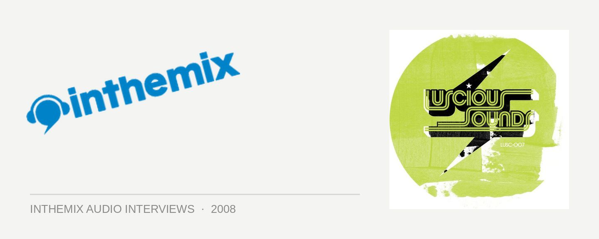

DJs Are Not Rockstars [Audio]: New York City electro stylin’
Has there been a bigger DJ duo to emerge out of the clubs of New York City? DJs Are Not Rockstars was originally the result of a partnership between Princess Superstar and Alexander Technique that got off the ground in 2000, and which lead to many heady (and sweaty) experiences in nightclubs around the world. When Princess Superstar departed in 2006, the perfect replacement was found in the form of New York ‘it’ girl DJ Cat who’d been a regular behind the decks at fashion events, private celebrity parties and exclusive Vogue Magazine digs. This new partnership ensured that the sweat and hedonism would continue…
Although they hail from New York, their sound has just as much in common with the noise and electricity that’s emerging out of the French scene at the moment. They’ll be arriving in Australia this weekend for a series of dates for the Onelove crew, and here ITM’s Angus Paterson talks to DJ Cat about electro, partying hard and what we’re hearing at the moment from the ‘New York City beat’…
Get sweaty and wild with DJs Are Not Rockstars at the following shows around the country…
Thu Feb 7 – Byron Bay, La La Land
Fri Feb 1 – Perth, Venue TBA
Fri Feb 8 – Adelaide, Electric Circus
Sat Feb 9 – Sydney, Tank
Sun Feb 10 – Melbourne, Prince Bandroom